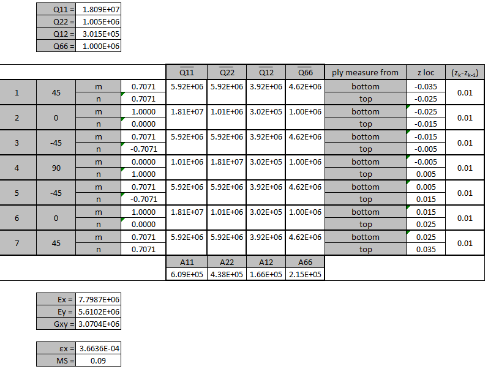
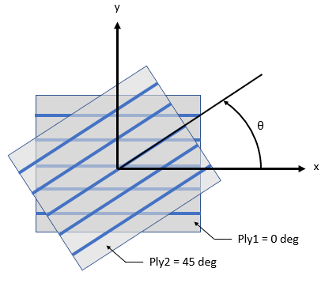
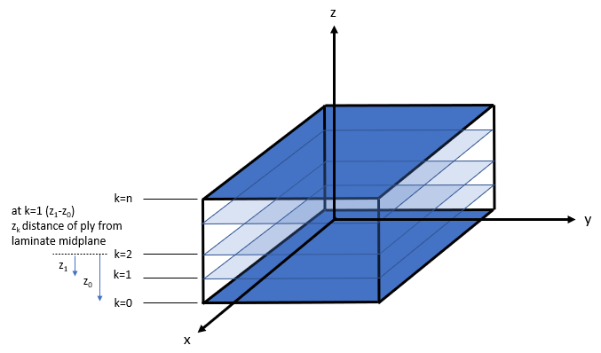

Laminate Theory#
Problem Statement#
Find the general form of the in-plane average stiffness matrix \([A]\) of a composite laminate such that the average strain \(\epsilon\) can be calculated and compared to a composite strain allowable. Note the out-of-plane bending \([D]\) matrix and coupling \([B]\) matrix terms for thin symmetrical and balanced composites are negligible.
Example#
What is the margin of a panel, given:
Laminate: 45/0/-45/90/-45/0/45
\(E_{11}=18e6psi\)
\(E_{22}=1e6psi\)
\(G_{12}=1e6psi\)
\(v_{12}=0.3\)
\(\epsilon_{tension}=4e-4 in/in\)
Applied Axial Flow \(N_x = 200 lb/in\)
Compute the global coordinate system stiffness matrix \(Q\) from \(eq4-7\)
Compute the per ply direction stiffness matrix \(\overline{Q}\) from \(eq10-13\)
Compute the \(z\) location from the midplane of the laminate as part of \(eq15\) (if all plies are the same thickness these are simply just the ply thicknesses)
Compute the average laminate stiffness matrix \(A\) from \(eq15\)
Compute the average modulus \(Ex,Ey,Gxy\) from \(eq21-23\)
Compute the strain of the part under loading by: \( \epsilon_x = N_x/(tE_x) \)
Compute the margin versus the allowable \( MS = \epsilon_{tension} / \epsilon_x - 1 \)

Derivation#
There is a bit of math ahead of us, so it is important to understand the end goal before we being. Metallics are analyzed in terms of stress allowables, where the isotropic material properties (ex. Young’s Modulus \(E\) and Shear Modulus \(G\)) is the same in all direction. Composites are analyzed in terms of strain allowables have anisotropic material properties. Before moving forward let’s understand why composites are analyzed in terms of strain, to list a few:
strain allowables vary with laminate ply percentages in a predictable manner
for thin laminates, strains are constant
strains are non-dimensional
In this derivation, we’ll start from the general 6x6 stiffness matrix and boil it down to simplified solution that will suffice for most of the composite analysis problems out there:
in-plane loading (no through thickness bending), note this is different than in-plane bending load applied to a beam’s composite web - the in-plane bending load is really just an in-plane axial gradient load therefore in-plane bending load is still applicable for this solution
orthotropic laminate (achieved by having a near symmetrical/balanced laminate)
The end goal here is to get a general form for the average laminate \(E_x,E_y,G_{xy}\) so that we can compute the strains of our laminate under applied loads. Composites derive from the same governing principals as metallic structures, Hooke’s Law. Recall that 1D Hooke’s Law has the form:
The general form of Hooke’s Law is given by \(eq2\) where the stress terms is equal to the stiffness matrix \(Q\) times strains:
However in most use cases we only care about in-plane stress, and \(eq2\) reduces to:
The global coordinate system stiffness matrix terms are:
where,
\(E\) = Young’s Modulus (Elastic Modulus)
\(v\) = Poisson’s ratio
Now before we continue, let lay some ground work for how to denote each ply direction. The figure below shows a unidirectional tape (fibers all align in 1 direction). Note that the 1st ply is a \(\theta=0deg\) ply, and the 2nd ply is \(\theta=45deg\). Although the example here shows unidirectional tape, the same principal applies to fabric (0deg + 90deg fabric on the same ply); for this case a fabric ply that is 0deg+90deg is \(\theta=0deg\) and a ply that is +/-45deg is \(\theta=45deg\).

For short hand, lets capture the sines/cosines by:
Now that we set the stage for ply direction, we will have to transform the stiffness matrix \(Q\) into the ply directions, denoted by \(\overline{Q}\):
Recall the end goal here was to get a general equation for in-plane loading (only Nx, Ny, Nxy) thin laminates, we can do this by integrating stress over the laminate thicknesses to get:
where,
\(\overline{\sigma_x}\) = average stress
\(t\) = laminate thickness
\(N_x = \overline{\sigma_x}t = E_x\epsilon_xt\) axial flow 0deg [lb/in]
\(N_y = \overline{\sigma_y}t = E_x\epsilon_yt\) axial flow 90deg [lb/in]
\(N_{xy} = \overline{\sigma_{xy}}t = G_{xy}\gamma_{xy}t\) shear flow [lb/in]
And the relationship between the ply direction transformed stiffness matrix \(\overline{Q}\) and average laminate stiffness matrix \(A\) is:
where,
\(z_k\) = distance from top of the ply to midplane of laminate
\(z_{k-1}\) = distance from bottom of the ply to midplane of laminate

Recall that 1D Hooke’s Law rearranged to solve for strain of our laminate (remember this is the form we need to compare laminate strain to laminate strain allowables):
Now to achieve this same step in matrix form we must invert the average stiffness matrix \(A\):
Notice that \({eq16}\) and \({eq17}\) follow the same form, and now we can pull out the average modulus terms as:
That becomes:
Now that we have the average modulus of our laminate, we can compute the average strain given a applied load and compare it different laminate allowables such as open hole compression, and filled hole tension for our margin.
Definitions#
Laminate: a stack of laminas or plies
Lamina: single layer of ply that consists of many fibers to achieve the desired material stiffness for a single ply
Ply: term used interchangeably with lamina
Isotropic: same material property in all directions (Young’s and Shear Modulus are the same)
Orthotropic: 3 constant properties in 3 directions respectively
Anisotropic: material property is not the same in all directions
References#
Michael C. Y Niu, Composite Airframe Structures 3rd ed. North Point, Hong Kong: HKCPL, 2010.